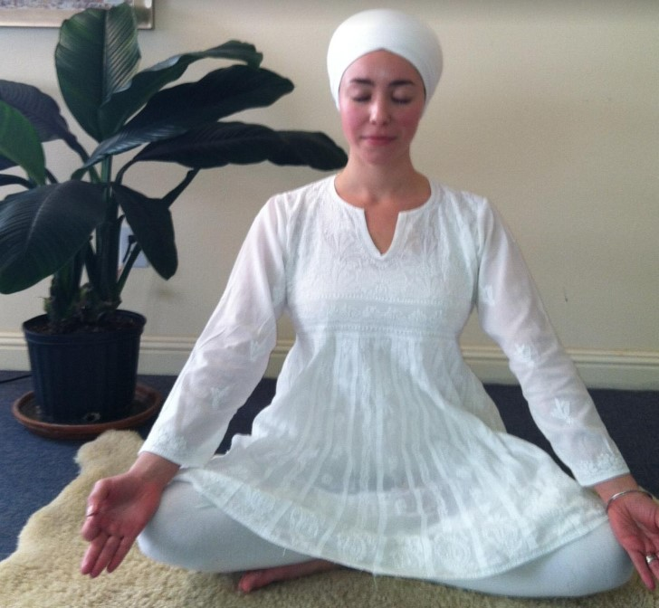

Kundalini Yoga will be taught in the Yoga teacher training courses, and will be in the last half of the teaching
module. However, Meditations and the very beautiful chants will be incorporated right from the beginning of the
course, as they are very powerful and cleansing exercises by themselves.
Kundalini yoga is a dynamic blend of mantras, music, asanas (postures) and breathing exercises, that helps to
elevate your mind and soul. It is a very spiritual form of yoga and helps to awaken dormant energies lying within
you.
An uplifting blend of spiritual and physical practices, Kundalini Yoga incorporates asanas, movement, dynamic
breathing techniques, meditation, and the chanting of mantras, such as Sat Nam, meaning "truth is my identity." The
goal is to build physical vitality and increase consciousness. It is a challenging form of yoga where you work on
refining your inner energy, purifying your mind and yourself.
Kundalini Yoga is considered as the “Yoga of awareness”. It helps cultivate the creative spiritual potential of a
human to unfold, creating more truth, more strength and helping you to uphold values and focus on the compassion and
consciousness needed to serve and heal others.
It is a very pure form of yoga, and is considered a highly disciplined way, helping you to come into a very dynamic
form of Yourself!
Discipline is Power!!! And, Success comes from Discipline
Kundalini Yoga classes work on different parts of the body and also work on energy fields, and a class can easily go
up to 2 hours. They include mantra chanting and meditations and each day one experiences a completely different
class. Music is an important part of Kundalini Yoga. It is based on Sikh prayers and mantras. The classes are very
energetic, vigorous and challenging.
Kundalini Yoga is a Yoga of Discipline, and each exercise set, meditation, or prayer exercise can be incorporated as
a 40 day sadhana, for personal growth and discipline.
Why wear white in a Kundalini Yoga class???

As Yogi Bhajan has said,
We wear white because it's a simple scientific fact that every piece of matter or material has a foot and a
half aura. Every animal has a three and a half foot aura. Every human has a nine foot aura. And if we wear the
cotton and we wear the white, this color therapy gives us one extra foot of aura"
We adopted this color because of our background and to support our development. We ask you to wear white so
that you will reflect what is outside and go within yourself—that’s what white clothes can do for you.
When you are totally dressed in white, the entire face reflects, and then it is very difficult to become
intimate. Wearing white demands that the other person deal with you on a higher level, because that person has
to concentrate himself in order to advance.
Wearing white is the total balance of all the chakra's - seven colors of the auric field.
So wear white
Sat Nam!